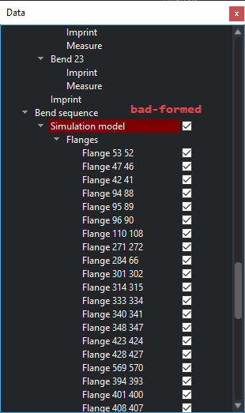

Project overview
Analysis Situs implements Document Model of operating with data. All data objects are organized hierarchically into the project tree. Some objects are structural and cannot be affected (e.g. Part Node). Some other objects are constructed dynamically and can be dynamically removed. The data model of Analysis Situs is entirely based on Active Data framework [Slyadnev, 2015]. This framework comes with such handy ready-to-use mechanisms as:
- Open/save.
- Undo/redo.
- Copy/paste.
- Transactional approach to data modification.
- Parametric dependencies between data objects.
You may freely customize the Data Model of Analysis Situs by introducing your own data types as explained in the Developer's Guide [Slyadnev, 2015]. It should be noted that Analysis Situs checks each newly introduced data object for consistency. If a Node is "bad-formed," it is highlighted in the object browser:

Dump contents
To dump the internals of your current project, use dump-project command.
Read on
- A long note on prototyping ("Manifold Geometry", 2023)